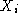
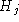
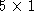

Next: Examples
Up: Function lmisolver
Previous: Function lmisolver
[XLISTF[,OPT]] = lmisolver(XLIST0,EVALFUNC[,options])
where
- XLIST0: a list structure including matrices and/or list of matrices.
It contains initial guess on the values of the unknown matrices. In general, the
ith element of XLIST0 is the initial guess on the value of the
unknown matrix  . In some cases
however it is more convenient to define one or more elements of
XLIST0 to be lists (of unknown matrices) themselves. This is a
useful feature when the number of unknown matrices is not fixed a priori
(see Example of Section 2.2.2).
The values of the matrices in XLIST0, if compatible with the LME functions,
are used as intial condition for the optimization algorithm; they are
ignored otherwise. The size and structure of XLIST0 are used to
set up the problem and determine the size and structure of the output XLISTF.
-
EVALFUNC: a Scilab function called evaluation function
(supplied by the user)
which evaluates the LME, LMI and objective functions, given the values of the
unknown matrices. The syntax is:
[LME,LMI,OBJ]=EVALFUNC(XLIST)
where
- XLIST: a list, identical in size and structure to XLIST0.
- LME: a list of matrices containing values of the LME
functions
 's
for X values in XLIST. LME can be a matrix in case
there is only one LME function to be evaluated (instead of a list
containing this matrix as unique element). It can also be a list
of a mixture of matrices and lists which in turn contain values of
LME's, and so on.
's
for X values in XLIST. LME can be a matrix in case
there is only one LME function to be evaluated (instead of a list
containing this matrix as unique element). It can also be a list
of a mixture of matrices and lists which in turn contain values of
LME's, and so on. - LMI: a list of matrices containing the values of the LMI
functions  's
for X values in XLIST. LMI can also be a matrix (in case
there is only one LMI function to be evaluated). It can also be a list
of a mixture of matrices and lists which in turn contain values of
of LMI's, and so on.
- OBJ: a scalar equal to the value of the objective function f
for X values in XLIST.
If the  problem has no equality constraints then LME
should be []. Similarly for LMI and OBJ.
problem has no equality constraints then LME
should be []. Similarly for LMI and OBJ. -
options: a  vector containing optimization
parameters Mbound, abstol, nu, maxiters,
and reltol, see manual page for semidef for details (Mbound
is a multiplicative coefficient for M). This argument is optional,
if omitted, default parameters are used.
- XLISTF: a list, identical in size and structure to XLIST0
containing the solution of the problem (optimal values of the unknown matrices).
- OPT: a scalar corresponding to the optimal value of the minimization
problem .
Next: Examples
Up: Function lmisolver
Previous: Function lmisolver
Scilab Group